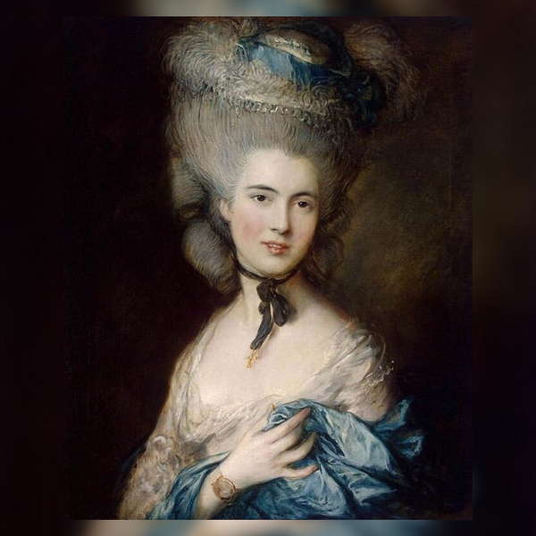

Томас Гейнсборo
Дама в голубом
Эпоха барокко нашла свое отражение в образе «дамы в голубом» на полотне
Томаса Гейнсборо. Эта картина написана в мягких полутонах, подчеркнуты грация и тонкое изящество деталей.
Принято считать, что это портрет Елизаветы Бофорт, дочери адмирала Боскауэна.
В Эрмитаже картина с 1912 г. и является единственной из произведений художника в России.